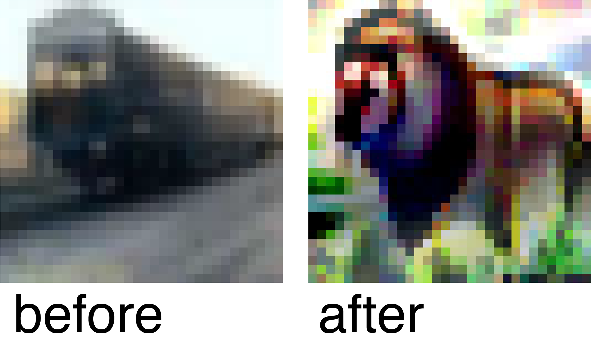

How can adversarial attacks on DNNs be visualized?
Two machine learning students cross the street.
One of them spots a truck and says: "Look out,
there's a deer!"
Computer vision has made considerable progress over the last 50 years and
the introduction of Deep-Neural-Networks (DNNs) to the field has brought about
a breakthrough (e.g., Krizhevsky et al., 2012).
DNNs tasked with classifying images into categories have become increasingly
successful and nowadays demonstrate phenomenal accuracies (LeCun et al., 2015).
However, DNNs show multiple weaknesses, for example, they show remarkably little
generalization to image distortions, make overconfident predictions on out-of-distribution
data (OOD data) and their black box decisions are inscrutable.
Further, they are not robust against adversarial attacks, i.e.,
input images that have been specially modified to mislead the DNN to a
false image-categorization (Augustin et al., 2020). In this context, adversarial attacks are used as a
method to make DNNs more robust.
The project ‘Visualizing Adversarial Attacks on DNNs’
was a team effort of a group of 7 students,
with the goal of developing a graphical interface that could visualize adversarial attacks
on selectable DNNs, illustrated on datasets of images.
The software was programmed to be used in a research context
in the
Machine Learning Working Group
of Prof. Hein and should visualize how adversarial
attacks on DNNs modify, morph, and change images. The following text outlines the functionalies of the software, provides basic information on DNNs and finally draws connections to underlying philosophical questions on the nature of perception.
What does a DNN tasked with classifying images do?

In short, a DNN constructed from the architectures used in this project (e.g., ResNet50, Resnet18)
receives a 32 by 32 pixel image as an input.
These input-images can be sourced from public image databases such as CIFAR_10 or CIFAR_100
that each contain 60,000 labelled images.
The task of the DNN is then to correctly label an input image.
Figure 1 visualizes how a DNN receives an image,
which is processed by the first layer containing nodes from a_1 to a_n.
Following, each subsequent layer passes information to the next layer via connections and corresponding weights.
The term 'Architecture' describes the structure of nodes and the number of layers,
whereas 'Model' describes the weights and connections between the nodes.
Combining an architecture with a corresponding model results in a functioning DNN.
Moreover, only after training a DNN with training data and feedback,
can it produce accurate output labels. Training a specific architecture
produces a corresponding robust model with its’ weights and connections.
The software we developed visualized adversarial attacks on input-images.
It presented a graphical interface that allowed a user to select models, attacks and images
in order to execute and observe the effects of adversarial attacks on images.
The user-interface could be divided into two sections:
the Model selection and the Attack selection
The Model Selection
Here the model, architecture and dataset which should be used for the attack could be selected. The selected architecture, ResNet50 in this example, is 50 layers deep. The model 'At05', for example, is one corresponding and robust model for ResNet50 and it is the result of successful training of ResNet50 on CIFAR_100 data. Some models are more robust than others, meaning they are more accurate and less prone to errors even from OOD data. Lastly, the dataset describes what kind of image database is used for image-categorization, in this example CIFAR_100 is used, which contains images from 100 different categories.
The Attack Selection
In this section what type of attack should be used on the input images could be selected, for example 'PGD' in this example. Further parameters of the attack could also be defined, Epsilon, the number of Iterations, Momentum, etc. Moreover, other settings such as target labels, saving of results, etc. could be selected.
The compute button then executes the attack on the image datasets with the selected models.
Input
The DNNs that classify images into categories,
receive 32 by 32 pixel images as inputs.
These images are either taken from image databases,
such as CIFAR_10 or CIFAR_100, or can be uploaded individually.
The CIFAR_10 database is public and contains 60,000 images from 10 different categories
and CIFAR_100 also contains 60,000 images but from 100 different categories.
CIFAR image-categories are sampled from various groups of objects,
for example animals, such as cat or dog, man-made objects, such as lamp,
skyscraper or keyboard, or natural objects, such as cloud or oak.
Output


The output shows an animation of the input image throughout multiple iterations of an attack (Figure 3).
The attack modifies the input image to a target image-category.
The example above demonstrates a PGD-type attack on an image of a train.
The target image-category of the attack is lion.
The visualization of the attack on the input image nicely demonstrates
how the image of a train morphs into an image of a lion.
Further, a plot visualizes the development of how the DNN classifies the image
throughout the iterations of the attack (Figure 4).
In this case, the DNN assigned the image the label train before the attack,
as it was the label with the highest probability.
At the end of the attack, which consisted of 30 iterations,
the attack successfully shifted the probabilities.
The DNN now assigned the input-image the label lion, as it was the label with the highest
probability at the end of the attack, i.e., the adversarial attack was successful.
It is important to note, that there are many different types of
adversarial attacks on DNNs and for this project
I specifically chose a type of attack,
that not only successfully shifted the probabilities of the DNNs image-labels to a target label,
but also visually morphed the input-image in a way that it visually resembled the target label. It shows how features of the start image were
adapted to resembling features of a lion. For example, the head of the train turned into visually resembling the head of the lion with its' eyes, while the
wheels of the train morphed into the legs of the lion.
Other types of attacks modify images in ways in which they shift the probabilities for DNNs,
but when visualized on the input images do not change much to our eye.
This raises multiple questions, questions regarding the nature of perception
but also questions regarding human nature, the concept of knowledge and consciousness.
For example, when the probabilities of the labels the DNN assigned to the input image changed,
did the DNN perceive that the input image changed from a train to a lion?
Did the DNN perceive as a conscious entity? How is consciousness connected to perception?
Further, how does the form of cognition and neural processing in neural structures of the brain differ from machine learning and neural network structures?
Investigating the underlying nature of visual perception by connecting neurobiological perspectives on visual perception with machine learning approaches to visual perception and perspectives from philosophy of mind
may reveal answers to these questions.
These are investigations I would like to continue in future projects under the Master Design & Computation and they carry important implications for society considering the use of machine learning
technologies in digital environments.
When we observe how adversarial attacks modify the images above,
how the iterations of the attacks morph the images,
it becomes very clear and palpable to us how the DNN switches its’ probabilities.
But it should be reminded to us,
how this type of entity does not classify an image in the same type of way as humans do. The quality of perception supercedes simple image-classification.
Augustin, M., Meinke, A., & Hein, M. (2020). Adversarial robustness on in-and out-distribution improves explainability. European Conference on Computer Vision (pp. 228-245). Springer, Cham.
Krizhevsky, A., Sutskever, I. I., & Hinton, G. E. (2012). Imagenet classification with deep convolutional neural networks. Neural Information Processing Systems (NeurIPS), 25:1097–1105.
LeCun, Y., Bengio, Y., & Hinton, G. (2015). Deep learning. nature, 521(7553), 436-444.
Krizhevsky, A., Sutskever, I. I., & Hinton, G. E. (2012). Imagenet classification with deep convolutional neural networks. Neural Information Processing Systems (NeurIPS), 25:1097–1105.
LeCun, Y., Bengio, Y., & Hinton, G. (2015). Deep learning. nature, 521(7553), 436-444.